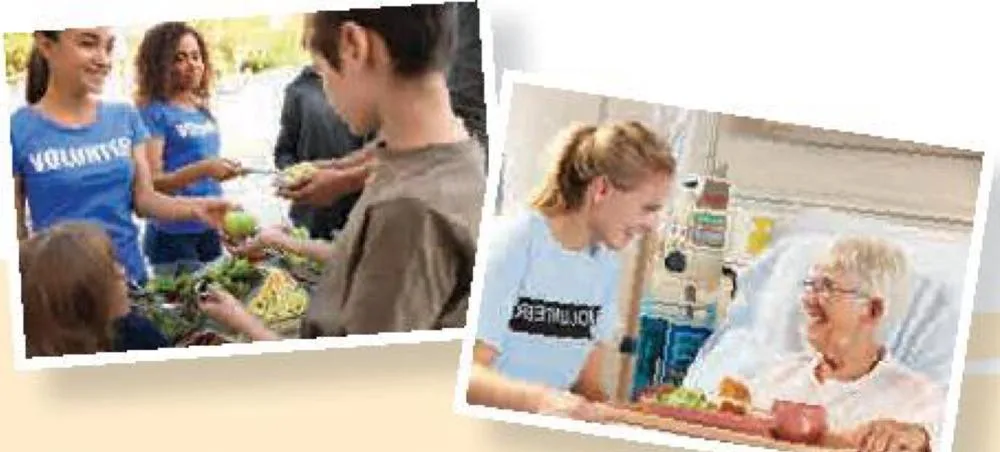

Communication and Culture
Lesson 7 — Best wishes · Teen independence in the US
8Four stops in 45 minutes
- 🎬
Warm-up
Living alone
5 min - 🎉
Everyday English
Expressing best wishes
18 min - 🇺🇸
Culture
Teen independence in the US
20 min - ✅
Wrap-up
Exit ticket
2 min
Warm-up
Living alone
5 minutesLiving alone: good or bad?
Living alone
👍 Pros
only your favourite food in the fridge
live quietly
decorate your own space
👎 Cons
make dinner even when you’re tired
repair or fix broken things by yourself
feel bored sometimes
Everyday English
Expressing best wishes and responding
18 minutesBest wishes
- A. Same to you
- B. Have a great time
- C. Happy New Year
- D. Thanks so much
1. Nam: Hey, I heard that you’re going on a trip to Singapore tomorrow. (1) ________ B. Have a great time!
Mike: Yep. (2) ________ D. Thanks so much.
Best wishes (2)
- A. Same to you
- B. Have a great time
- C. Happy New Year
- D. Thanks so much
2. Kevin: Hi, Mai. (3) ________ C. Happy New Year! Wishing you a great year ahead!
Mai: Thanks, Kevin. (4) ________ A. Same to you! Hope all your dreams come true!
Wishes and responses
| Expressing wishes | Responding to wishes |
|---|---|
| • Have a good/great …! • Best wishes!/Good luck! • I wish you a happy and healthy new year./Happy New Year!/Happy holidays! • I wish you best of luck/every success in your new … • Get well soon!/Hope you feel better soon/make a speedy recovery. |
• Thanks so much. • Thank you (all) for your wishes. • Thanks. Happy New Year to you too! • (The) same to you! Thanks. |
Make similar conversations
1. Student A is going to take an exam. Student B is expressing his/her wishes for Student A’s success.
2. Student B is not feeling well. Student A is expressing his/her wishes for Student B’s recovery.
Good luck! · Get well soon!
B: I heard you’re taking an English exam tomorrow. Good luck! · A: Thanks so much.
A: Are you OK? You look very tired.
B: I’m afraid I’m not feeling well.
A: I’m sorry to hear that. Hope you feel better soon. · B: Thanks.
Culture
Teen independence in the US
20 minutesTeen independence in the US (1)

American parents usually encourage independence in their teenage children, and it is normal for teens to want more responsibility and freedom for their choices.
Teen independence in the US (2)
American teenagers often start high school with a basic plan of classes they need to take to get a high school diploma. Some subjects like English, maths, science, or social studies are required, others can be selected. Schools also provide extracurricular activities, such as sports, clubs, and bands. American teenagers who plan to go to college study hard to get good grades. They are highly motivated and very confident, and take responsibility for their learning.
Teen independence in the US (3)
Many American teenagers have part-time jobs as they want to gain work experience and learn how to manage their money. Many teens work at fast-food restaurants and stores, or do babysitting, and dog walking for neighbours. They also volunteer at local hospitals, food banks, and old people’s homes, or take part in clean-up activities to improve their neighbourhood. This community service counts towards the volunteer hours that some schools require for university admission.
Teen independence in the US (4)
The teenage years form an important period of their development that influences adult life. The main goal of this period for most American teenagers is becoming independent, and they work hard both at school and outside school to achieve this goal.
Becoming independent
🏫 At school
Required subjects: (1) ________ English, maths, science, social studies
Extracurricular activities: (2) ________ sports, clubs, and bands
🏙️ Outside school
Part-time jobs: working at (3) ________ fast-food restaurants and stores, babysitting, dog walking
Volunteer work: at (4) ________ local hospitals, food banks, and old people’s homes; clean-up activities
Do American teenagers learn to become independent in the same way as Vietnamese teenagers?
🤝 Similarities: We also have required subjects like … · Extracurricular activities are also …
↔️ Differences: In Viet Nam, … while in the US, …
🗺️ Tip: draw a similar diagram for Vietnamese teens, then compare.
Viet Nam and the US
We can see both similarities and differences. We also have required subjects like Vietnamese literature, maths, natural sciences and social sciences to get a high school diploma. Extracurricular activities are also becoming popular in Vietnamese secondary schools.
However, in Viet Nam, all subjects are compulsory for students while in the US, some school subjects can be selected. Also, in the US, emphasis is placed on providing a well-rounded education whereas Vietnamese education focuses more on grades and academic achievements.
Before you leave…
1. Your friend has an exam tomorrow. What do you say? Good luck! · Best wishes! · I wish you every success!
2. Someone says “Happy New Year!” How do you respond? Thanks. Happy New Year to you too! · (The) same to you!
3. One way American teens become independent? part-time jobs · volunteer work · extracurricular activities
Homework
1. Practise your best-wishes conversations with a partner.
2. Do the Communication and Culture exercises in the workbook.
3. Prepare for Lesson 8 — Looking back and Project: a plan to develop a life skill.